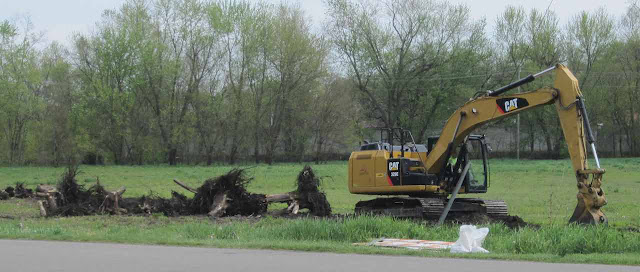
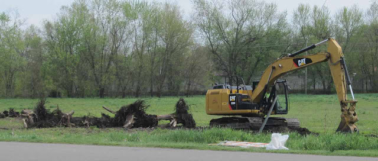
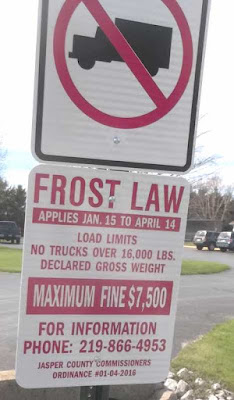

On Friday the Rensselaer Urban Forestry Council (RUFC) dedicated a tulip tree at the new fire station in celebration of Arbor Day. The tree is behind the station on the bank of the retention pond that you can see in the corner of the picture below.
The RUFC has planted about 350 trees in Rensselaer and this year will focus on Angelica Street.
After the brief ceremony the fire chief invited those at the ceremony to tour the almost completed fire station. We entered from the back and one of the first things we saw was the pair of lamps shown below.
The back of the building has a large kitchen area.
We then went through a room with tables that will serve as a training room.
A hallway runs north-south on the eastern part of the building. To the left is the kitchen and the doors on the right will lead to the fire trucks. You can see one of the public restrooms on the left. There are two and both are unisex. One person at a time will use them. Down the hall to the south are offices and stairs to the second floor. To the north and not shown in the picture is more hallway that leads to another stairs and locker rooms.
Below is one of three offices in the building. The current building has one office shared by five people. From this office one can see the highway in front of the building.
The southeast corner of the building will have a small museum that will house the two antique fire trucks that the department has.
Then it was time to go upstairs. There is no elevator. I asked if that would not cause a problem with the ADA legislation. It will not because the upstairs will be a secure location that is not open to the public. One of the highlights was the fire pole. It is the original fire pole from Rensselaer's first fire station. It has been in storage for about forty years but is now back in operation. Although it can be used, I think it is mostly decoration.
The second floor has a large room that will be used as a conference room. If the day comes when Rensselaer will have full-time fire fighters, this room can be converted into sleeping quarters.
Below is a picture of the truck bay area from the fitness center on the second floor. There are six doors on each side and the area can hold twelve vehicles. The fitness equipment for the fitness center is being donated by Saint Joseph's College.
There are several utility rooms on the second floor. This one had the heating equipment.
There are two heating systems. One pipes hot water through the concrete floor and that is how the truck bay area is heated. Shown below is part of that system.
Below is the view of the bay area from the west end. The other picture of this area was taken through one of the windows in the wall. The picture above is a close up of part of the reddish strip at the far end. It will be covered by panels.
There is a basement under the office portion of the building but we did not see it. It will only be used for storage.
You can see all of this and much more when the fire station has its open house on June 25. Mark you calendars; the building is quite impressive and you will not want to miss the public opening.

This blog reports events and interesting tidbits from Rensselaer, Indiana and the surrounding area.
Friday, April 29, 2016
Art exhibits
SJC has a short-lived student art exhibit in the Core Building that will end on May 2. It features student work from the past semester (or year).
There were a number of distorted portraits similar to this one.
They were a student assignment in which the student could see themselves in mirror but could not see their hands as they drew. The exercise is suppose to improve hand-eye coordination. After the ink drawing was completed the students colored the result.
Another exercise was to draw skulls, the structure behind the face. Artists have studied anatomy since the Renaissance.
A longer-lasting exhibit is the Prairie Arts Council 13th annual photography exhibit that will run through June 10. It seems strange to take pictures of pictures, so I didn't.
This exhibit is judged with categories Black and White, Color, and Digitally Altered.
There were a number of distorted portraits similar to this one.
They were a student assignment in which the student could see themselves in mirror but could not see their hands as they drew. The exercise is suppose to improve hand-eye coordination. After the ink drawing was completed the students colored the result.
Another exercise was to draw skulls, the structure behind the face. Artists have studied anatomy since the Renaissance.
A longer-lasting exhibit is the Prairie Arts Council 13th annual photography exhibit that will run through June 10. It seems strange to take pictures of pictures, so I didn't.
This exhibit is judged with categories Black and White, Color, and Digitally Altered.
Wednesday, April 27, 2016
Meeting Candidates II
Recently the students in one of Paul Norwine's classes at Kankakee Valley High School invited the four candidates running for the County Council to be interviewed about about themselves and what issues they consider important. Three of the four responded. I have embedded the three videos that the students produced. You can also find them on youtube here.
Tuesday, April 26, 2016
City Council meeting 4-25-2016
I arrived a few minutes late to the City Council meeting on Monday night, but did catch the last of the Citizens' Comments section in which a 40-year employee of Walgreens was being honored by the store.
There were a number of ordinances on the agenda. A drug fund was set up to collect money confiscated from drug arrests. Then a series of ordinances wrote off bad utility debt from bills prior to 2011: water, $4435.60; sewage, $7139. 79; electric, $16,150.79; gas, 14,407.15; and sanitation, $1.760.49. (Some of those numbers may be off because I did not write them down correctly or because I cannot read my own handwriting.) Even though the debt has been written off, if anyone who owes any of this money applies for city utilities, they will not be granted city utilities until their unpaid bills are paid.
A consultant with a company called First Group made a presentation offering help in preparing a road assessment. A road assessment is a necessary item if the City wants to apply for a new program of state grants that is designed to encourage more preventative maintenance on local roads and streets. This is the same program that was discussed at last weeks County Council. The state will match local spending dollar-for-dollar if the local unit gets a grant. One Council member asked why a long term plan for road assessment was needed for a program that may only give grants for a couple years. The answer was that the State wants cities to recognize where they are now and what their future costs will be. The Council approved signing the contract for $22,400.
The Council approved closing part of the street in front of City Hall on May 20 for a surplus auction. The law says that the only way that the City can dispose of surplus property is by auction. (Here is a link to the City auction of 2012 that has a link to the auction of 2010.)
There was a short discussion of the School Board opening. Applications must be made before noon on May 9.
A company for California, Black Dot Capital, has inquired about buying the agreements that the City has with Verizon and Sprint to use the water towers as cell towers. These agreements are worth more money than the City realized and it can either sell them or it can renegotiate them when they come due in a few years. At this point the City wants more information.
In other items and announcements, the Police Department will be tagging abandoned vehicles as we approach clean up week. The grand opening for the new fire station will be Jun 25, 11:00-2:00. The target date for the opening of the pool is Memorial Day. Practical Tree Service removed 29 trees and has ground most of the stumps. The Council approved a road closing for Augusta Street on May 21 for a graduation party. National Gypsum may break ground for their expansion in May. The Comfort Suites is nearing completion. Saturday is town-wide garage sale day.
If you drive in the country you will notice farmers are busy in the fields. In addition to the town-wide yard sale this weekend, the Farmers Market begins its season. Steffen's Jewelry celebrates its 60th anniversary and Big Dog Sales and Rentals has its annual open house.
As for a picture, today heavy equipment was removing the stumps along Lincoln Street.

There were a number of ordinances on the agenda. A drug fund was set up to collect money confiscated from drug arrests. Then a series of ordinances wrote off bad utility debt from bills prior to 2011: water, $4435.60; sewage, $7139. 79; electric, $16,150.79; gas, 14,407.15; and sanitation, $1.760.49. (Some of those numbers may be off because I did not write them down correctly or because I cannot read my own handwriting.) Even though the debt has been written off, if anyone who owes any of this money applies for city utilities, they will not be granted city utilities until their unpaid bills are paid.
A consultant with a company called First Group made a presentation offering help in preparing a road assessment. A road assessment is a necessary item if the City wants to apply for a new program of state grants that is designed to encourage more preventative maintenance on local roads and streets. This is the same program that was discussed at last weeks County Council. The state will match local spending dollar-for-dollar if the local unit gets a grant. One Council member asked why a long term plan for road assessment was needed for a program that may only give grants for a couple years. The answer was that the State wants cities to recognize where they are now and what their future costs will be. The Council approved signing the contract for $22,400.
The Council approved closing part of the street in front of City Hall on May 20 for a surplus auction. The law says that the only way that the City can dispose of surplus property is by auction. (Here is a link to the City auction of 2012 that has a link to the auction of 2010.)
There was a short discussion of the School Board opening. Applications must be made before noon on May 9.
A company for California, Black Dot Capital, has inquired about buying the agreements that the City has with Verizon and Sprint to use the water towers as cell towers. These agreements are worth more money than the City realized and it can either sell them or it can renegotiate them when they come due in a few years. At this point the City wants more information.
In other items and announcements, the Police Department will be tagging abandoned vehicles as we approach clean up week. The grand opening for the new fire station will be Jun 25, 11:00-2:00. The target date for the opening of the pool is Memorial Day. Practical Tree Service removed 29 trees and has ground most of the stumps. The Council approved a road closing for Augusta Street on May 21 for a graduation party. National Gypsum may break ground for their expansion in May. The Comfort Suites is nearing completion. Saturday is town-wide garage sale day.
If you drive in the country you will notice farmers are busy in the fields. In addition to the town-wide yard sale this weekend, the Farmers Market begins its season. Steffen's Jewelry celebrates its 60th anniversary and Big Dog Sales and Rentals has its annual open house.
As for a picture, today heavy equipment was removing the stumps along Lincoln Street.

Thursday, April 21, 2016
The end of a long meeting
The last part of the County Council meeting on Tuesday evening was devoted to a discussion of the Local Option Income Tax. Senator Hershman had accepted an invitation to attend the meeting. Today’s Rensselaer Republican recounts much of what went on. I will not try to do a similar report, but rather mention some of the things that struck me.
Several members of the Council have argued that the County should be allowed to choose to whom to give the property tax relief that the LOIT provides. That idea was pretty effectively demolished by Hershman. The law and legal precedents will not allow it.
When we pay our local income tax, the money goes to the state department of revenue. There people sort out how much should go to the various government entities. If you are a resident of Rensselaer, some of what you pay will go to the County, some will go to the City, some will go to the Library, etc. Trying to decide how much each entity gets takes time. As a result, the money that that comes back to the county this year is based on how much was collected two years ago.
Steve Jordan mentioned that the county is in the lowest five counties in terms of real estate taxes. I am not sure how he gets that number. Today’s Republican has the property tax rates for the county and there is great variation by township and towns because the tax rate depends not only on the county rates but also on the rates of the township or town, school district, library, airport authority, etc. Someone also mentioned that the County is in the top 20 for County expenditures per capita.
There was a lot of discussion on fairness and tax burden but almost none on how the tax affects behavior. For example, the reduction in the property tax should raise land prices. The after-tax return on owning land rose when the property tax rate decreased, and perhaps this is one of the reasons that our land prices have risen quite dramatically. The same effect should be true for homes, but it is offset by the higher income taxes. It is much easier to be an absentee landlord for farm land than for housing.
One of the arguments for lowering the LOIT and thereby raising property taxes is that it will shift some of the burden to non-residents. Citizens are always happy to shift the burden to nonresidents. It was suggested at the meeting that even though non-resident property owners get a tax break from the LOIT, we should not be concerned because they employ people who do pay the taxes. However, many people who work in Jasper County do not live here. The vast majority of people who work at Advance Auto, for example, live in other counties. In general, the southern part of the county imports workers and the northern part exports them.
Perhaps the most fascinating thing I noticed was the ability of some to maximize or minimize numbers by how they stated them. If you want a number to seem big, you present it as a total, as in a reduction in the LOIT will raise the burden on property by over $800,000. If you want the number to seem small, you present in per capita terms, as in the proposed reduction in the LOIT will lower the average person’s tax by less than $30. Or, lowering the tax rate by .1% will increase property taxes by 3%. (That is true because the reducing an income tax of 2.9% by .1% is a 3% reduction.)
I was impressed by the political skill of Senator Hershman. I can see why he has risen to positions of leadership in the state senate.
In the comments, Andrew Andree said that he had switched from in favor of lowering the LOIT to being on the fence. If he votes to keep the LOIT as it is, that would probably produce a tie which the president of the Council, Rein Bontreger would break and he has indicated that he would vote to keep the rate as it is. Bret Risner, a candidate for the County Council, was in the audience and it was clear from his reaction to various statements that if he gets on the Council, he will oppose any lowering of the LOIT.
In other news, there is a new business in town, though it likely will mostly serve people from other places. Miss Hall, who recently left employment at the Jasper County Economic Development Organization to become and event planner at Purdue and then moved to the Development Office at Saint Joseph’s College, has struck out on her own with an event planning company.
On Tuesday I also attended a bit of the presentation about cemeteries at the Historical Society Museum. I learned that the reason flowers surround the casket is that before embalming when most wakes were held in private houses, the flowers helped mask the odors of decay. Embalming became common during the Civil War when wives and mothers wanted the remains of dead soldiers to be buried back home rather than on the battlefield.
The tree cutters seem to be finished with tree cutting along Lincoln. On Wednesday they were hauling away the big logs, which I assume will be cut up as lumber.
The Building Trades House looks almost complete.

Wednesday, April 20, 2016
The start of a long meeting
I stopped by the new fire station on Tuesday.
There was something missing: the construction trailer and the sign.
The parking lot looked like it needed a final layer of asphalt, but the facility looks ready to go.
On Tuesday evening the County Council had a long meeting, lasting two and a half hours. Some scouts were there to earn a merit badge--they chose poorly. Rarely does a Council meeting last so long.
There were several items discussed. The first was a request from the sheriff for an additional appropriation, which led to questions on a variety of other topics. The communication tower north of town will probably be in service on July 1. The concrete pad for the equipment building was delayed by the frost law and is now being completed. The current jail population is 93, with the number of female inmates exceeding the capacity of the female pod. About 125 people die each day in the US from drug overdoses. In the past two years Jasper County has had nine of those deaths, and some who died had previously been revived with Narcan but still went back to the drugs.
The airport wanted money moved to pay some bills. The bids for a new hangar are due back at the end of the month. The fuel farm will be under construction in May and June and during that time the airport will not be selling fuel. The date of the annual fly-in is July 9.
The Commissioners reported on the one-time distribution from the LOIT (pronounced low it) stabilization fund. This fund was set up to smooth the flow of money collected from the county income tax, and it did not have a mechanism to return money to the counties. So over time over $10 million has accumulated in this fund and it is now being returned. The county will get about $6 million, and other branches of government will get the rest. Rensselaer will get about million and the Jasper County Public Library will get about a million. There is no time limit on spending it, but 75% of what is coming to the county must be spent on roads or bridges and the money has to be identified so that in the future the state can check to see if it was spent the way it was supposed to be spent. The stabilization funds have been cleaned out and will not be allowed to accumulate as much in the future.
The request of the Commissioners was to allow them to use the 25% not mandated for roads to be used for roads as well because the state has set up a new grant program for roads and one of the ways a county can match the grant is with the discretionary part of the distribution from the stabilization fund. The Council granted the request.
The rest of the meeting was devoted to a discussion of the LOIT. I will try to get a post up about that discussion for tomorrow, probably to be titled, "The end of a long meeting". There will be a vote on the topic at May's Council meeting.
There was something missing: the construction trailer and the sign.
The parking lot looked like it needed a final layer of asphalt, but the facility looks ready to go.
On Tuesday evening the County Council had a long meeting, lasting two and a half hours. Some scouts were there to earn a merit badge--they chose poorly. Rarely does a Council meeting last so long.
There were several items discussed. The first was a request from the sheriff for an additional appropriation, which led to questions on a variety of other topics. The communication tower north of town will probably be in service on July 1. The concrete pad for the equipment building was delayed by the frost law and is now being completed. The current jail population is 93, with the number of female inmates exceeding the capacity of the female pod. About 125 people die each day in the US from drug overdoses. In the past two years Jasper County has had nine of those deaths, and some who died had previously been revived with Narcan but still went back to the drugs.
The airport wanted money moved to pay some bills. The bids for a new hangar are due back at the end of the month. The fuel farm will be under construction in May and June and during that time the airport will not be selling fuel. The date of the annual fly-in is July 9.
The Commissioners reported on the one-time distribution from the LOIT (pronounced low it) stabilization fund. This fund was set up to smooth the flow of money collected from the county income tax, and it did not have a mechanism to return money to the counties. So over time over $10 million has accumulated in this fund and it is now being returned. The county will get about $6 million, and other branches of government will get the rest. Rensselaer will get about million and the Jasper County Public Library will get about a million. There is no time limit on spending it, but 75% of what is coming to the county must be spent on roads or bridges and the money has to be identified so that in the future the state can check to see if it was spent the way it was supposed to be spent. The stabilization funds have been cleaned out and will not be allowed to accumulate as much in the future.
The request of the Commissioners was to allow them to use the 25% not mandated for roads to be used for roads as well because the state has set up a new grant program for roads and one of the ways a county can match the grant is with the discretionary part of the distribution from the stabilization fund. The Council granted the request.
The rest of the meeting was devoted to a discussion of the LOIT. I will try to get a post up about that discussion for tomorrow, probably to be titled, "The end of a long meeting". There will be a vote on the topic at May's Council meeting.
Monday, April 18, 2016
Earth Day
The annual Earth Day festivities took place in Brookside Park on Saturday. One event was a 5K race. From this starting point some 5Ks go north to John Deere Road and back and others go out Bunkum and come back. However, this race took a third route, into Weston Cemetery, over the Talbert Bridge, out Sparling, and back. Despite the nice weather, there were not many runners.
One of the displays had a poster praising earthworms. I could not resist pointing out that some people consider them an invasive species.
On Saturday trees were being cut down by St. Augustine's Church. I think they were ash, which are being destroyed by in emerald ash borer, an invader from Asia.
By the end of the day all the trees that had been on the site were down. There are a lot of tree stumps, several very large.
One of the displays had a poster praising earthworms. I could not resist pointing out that some people consider them an invasive species.
It seemed a little strange that along with Earth Day, the end of last week saw some big trees coming down. On Friday workers were removing this huge maple along Lincoln.
By the end of the day it was down but still not cut up. The pile of wood chips was impressive.On Saturday trees were being cut down by St. Augustine's Church. I think they were ash, which are being destroyed by in emerald ash borer, an invader from Asia.
Below a second tree is being cut to pieces.
On Monday workers were back on Lincoln cutting the remaining trees on the site of the future high water treatment plant.By the end of the day all the trees that had been on the site were down. There are a lot of tree stumps, several very large.
Friday, April 15, 2016
Meeting the candidates
Last night local Republican Party organizations hosted a "Meet the Candidates" forum at the Clauss Bakery. I was a little disappointed when the moderators announced the forum was not supposed to be a debate. Each candidate was to limit his or her presentation to two minutes.
The first candidate to speak was Ed Charbonneau who represents the northern part of Jasper County, including the northern part of Rensselaer. He is unopposed in the primary. He said that the legislature has kept the state fiscally responsible and that that accomplishment was highlighted by our neighbor the to west. He also explained how the short legislative session, which occurred this year, came about. Until the 1970s the legislature met only every other year and passed a two-year budget. Starting in the 1970s, the legislature met for emergency sessions in the even years and those meeting developed into the current short session. The short session is short because it does not deal with the budget, which is still done for two years in the odd-numbered years.
Next two of the County Commissioners, Culp and Walstra, spoke. None of the Commissioners has a primary opponent. Kendell Culp said Jasper County needs economic development so that our children can stay the county. He also explained that the $10 million that the county will be getting, mostly for roads, is a refund of tax money residents have paid as local income tax (the LOIT or Local Option Income Tax) that had been held in a trust fund by the state. The trust funds will be cleaned out and the new limit on how much the state will hold in them will be much lower.
There are four Republican candidates for the three at-large County Council seats. Each gave presentations. Unlike in national and to some extent state elections, party labels usually do not matter much at the local level. There are other divisions that are more important, and the one that seems to me to be the most important for our County Council is the issue of the proper balance of property and income taxes. Jasper County currently has the third highest county income tax in the state. I assume it has one of the lowest property taxes, but unlike the income tax rate, it is impossible to rank the counties by property tax because different areas of each county have different rates. The Council has struggled with trying to decide the right balance, with some current Council members (Jordan, Bontreger, and Fritts) voting that the current levels are a good balance while others (Price, DeVries, Norwine, and Andree) voting that lower income and higher property tax rates would be the proper balance. The dispute is not about the total amount of taxation, but rather about how taxes should be extracted. I asked one of the few questions of the night, "If you could set the county income tax at any rate, what rate would you set?" The question got about five minutes of discussion, and the numbers given were 2.2% to 2.3% from DeVries, 2.25% to 2.5% from Price, and about 2.5% from Andree. Bret Risner never gave a number. (A 2.2% income tax rate would put Jasper County slightly above the median statewide level.)
The other primary race being contested is for County Treasurer. The current Treasure, Carla Anderson, is term limited so cannot seek another term and she is also retiring. Both of the candidates, Donya G Jordan, Tammy McEwan, have served as County Treasurer in the past and both have worked for many years in the Court House.
Having spent a lot of time watching local government in the past two years, I have found that the people in it are concerned and well-intentioned. They sometimes disagree, but when they do, the disputes remain civil and the people involved treat each other with respect. That apparently does not happen in all counties. Currently Carroll County is in the news because the various people are not getting along at all.
After the forum I asked Senator Charbonneau if he had been invited to the next County Council meeting. He said that he had, but that he would not be attending. However, Senator Hershmann will be there. If you are interested in local taxes, this might be a really interesting meeting. Hershmann and DeVries had an exchange of views in the "Letters to The Editor" section of the Rensselaer Republican several weeks ago. (The reporter from the Republican asked the candidates for contact info, so I expect some in-depth profiles on the various candidates in the next few weeks.)
Earlier in the day I stopped by the Business After Hours at the Gutwein-Risner Insurance Agency. In one conversation I learned that the bowling alley has been closed for months. (And some people think I know what is going on in town.)
Below you can see the results of Thursday's tree cutting on Lincoln Street.
 Earlier in the day some students at St Augustine School got a lesson on planting a garden.
Earlier in the day some students at St Augustine School got a lesson on planting a garden.
The first candidate to speak was Ed Charbonneau who represents the northern part of Jasper County, including the northern part of Rensselaer. He is unopposed in the primary. He said that the legislature has kept the state fiscally responsible and that that accomplishment was highlighted by our neighbor the to west. He also explained how the short legislative session, which occurred this year, came about. Until the 1970s the legislature met only every other year and passed a two-year budget. Starting in the 1970s, the legislature met for emergency sessions in the even years and those meeting developed into the current short session. The short session is short because it does not deal with the budget, which is still done for two years in the odd-numbered years.
Next two of the County Commissioners, Culp and Walstra, spoke. None of the Commissioners has a primary opponent. Kendell Culp said Jasper County needs economic development so that our children can stay the county. He also explained that the $10 million that the county will be getting, mostly for roads, is a refund of tax money residents have paid as local income tax (the LOIT or Local Option Income Tax) that had been held in a trust fund by the state. The trust funds will be cleaned out and the new limit on how much the state will hold in them will be much lower.
There are four Republican candidates for the three at-large County Council seats. Each gave presentations. Unlike in national and to some extent state elections, party labels usually do not matter much at the local level. There are other divisions that are more important, and the one that seems to me to be the most important for our County Council is the issue of the proper balance of property and income taxes. Jasper County currently has the third highest county income tax in the state. I assume it has one of the lowest property taxes, but unlike the income tax rate, it is impossible to rank the counties by property tax because different areas of each county have different rates. The Council has struggled with trying to decide the right balance, with some current Council members (Jordan, Bontreger, and Fritts) voting that the current levels are a good balance while others (Price, DeVries, Norwine, and Andree) voting that lower income and higher property tax rates would be the proper balance. The dispute is not about the total amount of taxation, but rather about how taxes should be extracted. I asked one of the few questions of the night, "If you could set the county income tax at any rate, what rate would you set?" The question got about five minutes of discussion, and the numbers given were 2.2% to 2.3% from DeVries, 2.25% to 2.5% from Price, and about 2.5% from Andree. Bret Risner never gave a number. (A 2.2% income tax rate would put Jasper County slightly above the median statewide level.)
The other primary race being contested is for County Treasurer. The current Treasure, Carla Anderson, is term limited so cannot seek another term and she is also retiring. Both of the candidates, Donya G Jordan, Tammy McEwan, have served as County Treasurer in the past and both have worked for many years in the Court House.
Having spent a lot of time watching local government in the past two years, I have found that the people in it are concerned and well-intentioned. They sometimes disagree, but when they do, the disputes remain civil and the people involved treat each other with respect. That apparently does not happen in all counties. Currently Carroll County is in the news because the various people are not getting along at all.
After the forum I asked Senator Charbonneau if he had been invited to the next County Council meeting. He said that he had, but that he would not be attending. However, Senator Hershmann will be there. If you are interested in local taxes, this might be a really interesting meeting. Hershmann and DeVries had an exchange of views in the "Letters to The Editor" section of the Rensselaer Republican several weeks ago. (The reporter from the Republican asked the candidates for contact info, so I expect some in-depth profiles on the various candidates in the next few weeks.)
Earlier in the day I stopped by the Business After Hours at the Gutwein-Risner Insurance Agency. In one conversation I learned that the bowling alley has been closed for months. (And some people think I know what is going on in town.)
Below you can see the results of Thursday's tree cutting on Lincoln Street.

Thursday, April 14, 2016
Odds and Ends 4-14-20016
I have noticed some changes recently at SJC. There is a building under construction by the baseball field. I was told that it will be a picnic pavilion.
A building that has been up a while but which I only recently visited is a greenhouse and classroom by the old college farm. It features an aquaponics system. I believe construction was funded by a grant from the Ball Foundation. (The building on the left is the hoop house. See here for more about it.)
For many years I had garden plots in this field so I visited it often in the summer. Now I rarely have a reason to go out this way.
The SJC football team is practicing outside. It may be a fall sport, but like many college sports, the athletes are expected to be doing something with their sport year around.
I also noticed that the old coal storage are west of the power plant was being fenced in and surfaced with stone. My guess is that it will be a parking lot. A week or two ago workers were tiling the area northeast of the Science Building. The scars from that work are still very visible.
This morning the sound of chain saws and a wood chipper led me to Jefferson and Lincoln where a large crew was cutting down the trees on the site of the future high water treatment plant.
There are a lot of trees and some, such as the one on the right of the picture, are large. The pile of wood chips should be very large by the time they are finished. A few blocks north on Jefferson a different crew was removing trees. This might be part of the City's contract to remove dead or dying trees from right of ways.
Back at the construction site, the porta-potty and the contractor's sign have arrived. Expect frequent updates on construction.
Mt Hood Pizza has some new signage. Some old signage is still visible but I could not make out the name. As I was writing this I remembered the name was Peerless. Are you old enough to remember it?
The library now has links to a almost a century of high school yearbooks on its site. Check out your favorite year.
A building that has been up a while but which I only recently visited is a greenhouse and classroom by the old college farm. It features an aquaponics system. I believe construction was funded by a grant from the Ball Foundation. (The building on the left is the hoop house. See here for more about it.)
For many years I had garden plots in this field so I visited it often in the summer. Now I rarely have a reason to go out this way.
The SJC football team is practicing outside. It may be a fall sport, but like many college sports, the athletes are expected to be doing something with their sport year around.
I also noticed that the old coal storage are west of the power plant was being fenced in and surfaced with stone. My guess is that it will be a parking lot. A week or two ago workers were tiling the area northeast of the Science Building. The scars from that work are still very visible.
This morning the sound of chain saws and a wood chipper led me to Jefferson and Lincoln where a large crew was cutting down the trees on the site of the future high water treatment plant.
There are a lot of trees and some, such as the one on the right of the picture, are large. The pile of wood chips should be very large by the time they are finished. A few blocks north on Jefferson a different crew was removing trees. This might be part of the City's contract to remove dead or dying trees from right of ways.
Back at the construction site, the porta-potty and the contractor's sign have arrived. Expect frequent updates on construction.
Mt Hood Pizza has some new signage. Some old signage is still visible but I could not make out the name. As I was writing this I remembered the name was Peerless. Are you old enough to remember it?
The library now has links to a almost a century of high school yearbooks on its site. Check out your favorite year.
Wednesday, April 13, 2016
Some forgettable meetings
The weather has been unseasonably cold and I have not wanted to work outside, so I have gone to some meetings that I might otherwise ignore.
Last week I attended the Jasper Newton Joint Drainage Board meeting. The only topic on the agenda was the clearing of the ditch in the northwest corner of the county that drains DeMotte but empties into the Kankakee River in Newton County. NIPSCO has utility poles on the bank of the ditch that have to be removed to clean the ditch, but the power line serves a pump that a farmer has, and NIPSCO is obliged to serve him. They have proposed boring the line underground on the banks of the ditch, and that was approved by the Board. Complicating the planning was a property owner who did not want equipment to be on his bank of the ditch and the DNR, which has wetland restrictions that must be followed.
On Monday I caught most of the Animal Control Board meeting. The meeting did not have a quorum so no business could be done and the agenda was tabled until the next meeting. On the agenda were an aggressive dog adoption policy, owner surrender policy, bylaws, and a vacancy on the board. The director gave his report (17 cats and 17 dogs came in, most went out to adoption or rescue, 3 animals were euthanized because they were sick). The next meeting is May 9. The meetings are less interesting now that the extreme hostility has faded away. There are still members of the public who attend, which is a bit unusual for public meetings. (I was the only outsider at the other three meeting mentioned here.)
The Alcoholic Beverage Review Board had a very short meeting on Tuesday morning. It had only two members present, but that is enough for a quorum. They approved a license for a new bar/tavern that will be opening in the DeMotte area. (Their approval is sent to the state for final approval, so the license will not be issued for about a month.) The meeting took about five minutes.
Speaking of bars, a few days ago I was trying to find something in an old issue of the newspaper and stumbled on this on the first page of either the March 10 or March 17, 1900 Jasper County Democrat:

Tomorrow night the Republican Party is having a "Meet the Candidates" event. Primary elections are coming up in a few weeks and there should be a lot of interest in the top of the ticket in both parties. At the county level there are only three contested races, all on the Republican side.
TREASURER Donya G Jordan, Tammy McEwan
COUNCILMEMBERS, AT-LARGE - VOTE FOR 3
*Andrew Andy Andree, *Gerrit H DeVries, *John T Price, Brett Risner
REPUBLICAN STATE CONVENTION DELEGATES, DISTRICT 1-VOTE FOR 3
Gerrit H DeVries, Richard O “Rick” Kallenbach, Paul C Norwine, John T Price
The asterisks indicate incumbents. The complete list of candidates can be found at
http://www.jaspercountyin.gov/egov/documents/1457714349_32355.pdf
Some people have voted already--early voting can be done on the second floor of the Court House.
Last week I attended the Jasper Newton Joint Drainage Board meeting. The only topic on the agenda was the clearing of the ditch in the northwest corner of the county that drains DeMotte but empties into the Kankakee River in Newton County. NIPSCO has utility poles on the bank of the ditch that have to be removed to clean the ditch, but the power line serves a pump that a farmer has, and NIPSCO is obliged to serve him. They have proposed boring the line underground on the banks of the ditch, and that was approved by the Board. Complicating the planning was a property owner who did not want equipment to be on his bank of the ditch and the DNR, which has wetland restrictions that must be followed.
On Monday I caught most of the Animal Control Board meeting. The meeting did not have a quorum so no business could be done and the agenda was tabled until the next meeting. On the agenda were an aggressive dog adoption policy, owner surrender policy, bylaws, and a vacancy on the board. The director gave his report (17 cats and 17 dogs came in, most went out to adoption or rescue, 3 animals were euthanized because they were sick). The next meeting is May 9. The meetings are less interesting now that the extreme hostility has faded away. There are still members of the public who attend, which is a bit unusual for public meetings. (I was the only outsider at the other three meeting mentioned here.)
The Alcoholic Beverage Review Board had a very short meeting on Tuesday morning. It had only two members present, but that is enough for a quorum. They approved a license for a new bar/tavern that will be opening in the DeMotte area. (Their approval is sent to the state for final approval, so the license will not be issued for about a month.) The meeting took about five minutes.
Speaking of bars, a few days ago I was trying to find something in an old issue of the newspaper and stumbled on this on the first page of either the March 10 or March 17, 1900 Jasper County Democrat:
A final meeting was the Jasper County Commission of Public Records. I see from what I wrote about last year's meeting is that I forgot the important lesson from that meeting.
As I have ventured out of town, I noticed that frost law signs are up. If you are unaware of how they are enforced, they might be confusing.
Tomorrow night the Republican Party is having a "Meet the Candidates" event. Primary elections are coming up in a few weeks and there should be a lot of interest in the top of the ticket in both parties. At the county level there are only three contested races, all on the Republican side.
TREASURER Donya G Jordan, Tammy McEwan
COUNCILMEMBERS, AT-LARGE - VOTE FOR 3
*Andrew Andy Andree, *Gerrit H DeVries, *John T Price, Brett Risner
REPUBLICAN STATE CONVENTION DELEGATES, DISTRICT 1-VOTE FOR 3
Gerrit H DeVries, Richard O “Rick” Kallenbach, Paul C Norwine, John T Price
The asterisks indicate incumbents. The complete list of candidates can be found at
http://www.jaspercountyin.gov/egov/documents/1457714349_32355.pdf
Some people have voted already--early voting can be done on the second floor of the Court House.
Monday, April 11, 2016
A trailer park for Rensselaer???
This morning I noticed linemen busy on the corner of Jefferson and Lincoln. I thought they might be taking down lines so that they could cut trees, but on closer inspection I realized that they had installed a new pole and were stringing a line to it.
In the afternoon the structure arrived that the new electrical connection will service.
It is not the start of a new trailer park. It is the construction trailer for the high water treatment plant that has been discussed for the past two years.
The trailer was mentioned at Monday's City Council meeting, which had a short and unexciting agenda. The gas tracker for April will be an increase of almost one cent per hundred cubic fee. The Council approved a proposal to remove about 30 trees that are dead or dying. Some are ash trees and in time there will be no more ash trees in the city right-of-ways; the emerald ash borer is killing them all. There were 3 bids received for tree removal and the low bid of $20,000 was accepted with a vote of 4 in favor and one opposed.
The Council has a school board position to appoint in the next few months. The current incumbent has indicated that she will reapply. The Council members will interview applicants in May and the appointment will be effective in July.
In administrative comments, Councilman George Cover recognized the dangerous work that the city linemen did during the recent high winds. They had to work on a line by the Babcock Quarry and were at time over the pit.
The Board of Public Works, which met before the Council meeting, approved the purchase of two body cameras for police officers. Chief Phillips requested the Council purchase a docking station and software for the cameras and the Council approved the request. Construction on the fire station is nearly completed and the city is scheduled to take possession on April 25.
The Mayor noted that the construction trailer for the high water treatment plant had arrived and that he had gotten a number of calls about it. Mr Lockridge said that this week trees would be cleared from the site and that the DNR requires the City to replace the trees that are removed with new plantings.
Chief Phillips noted that the Board of Public Works had in its meeting approved the request from the Jasper County Fair Association for fireworks on July 2.
In the afternoon the structure arrived that the new electrical connection will service.
It is not the start of a new trailer park. It is the construction trailer for the high water treatment plant that has been discussed for the past two years.
The trailer was mentioned at Monday's City Council meeting, which had a short and unexciting agenda. The gas tracker for April will be an increase of almost one cent per hundred cubic fee. The Council approved a proposal to remove about 30 trees that are dead or dying. Some are ash trees and in time there will be no more ash trees in the city right-of-ways; the emerald ash borer is killing them all. There were 3 bids received for tree removal and the low bid of $20,000 was accepted with a vote of 4 in favor and one opposed.
The Council has a school board position to appoint in the next few months. The current incumbent has indicated that she will reapply. The Council members will interview applicants in May and the appointment will be effective in July.
In administrative comments, Councilman George Cover recognized the dangerous work that the city linemen did during the recent high winds. They had to work on a line by the Babcock Quarry and were at time over the pit.
The Board of Public Works, which met before the Council meeting, approved the purchase of two body cameras for police officers. Chief Phillips requested the Council purchase a docking station and software for the cameras and the Council approved the request. Construction on the fire station is nearly completed and the city is scheduled to take possession on April 25.
The Mayor noted that the construction trailer for the high water treatment plant had arrived and that he had gotten a number of calls about it. Mr Lockridge said that this week trees would be cleared from the site and that the DNR requires the City to replace the trees that are removed with new plantings.
Chief Phillips noted that the Board of Public Works had in its meeting approved the request from the Jasper County Fair Association for fireworks on July 2.
Friday, April 8, 2016
Anything Goes
On Friday evening the Columbian Players of Saint Joseph's College presented Anything Goes, a musical with music by Cole Porter. It has a number of well-known songs, including "Anything Goes" and "I Get A Kick out of You."

Below is a picture of one of the numbers that did not have the major characters. (It was in better focus of most of the other pictures I took.)

This is the third time in the last 30 or 35 years that this play has been the spring musical at SJC. It has also been done by the high school theater group. I recall that my daughter was in it when she was in high school, which was probably before these students were born. I do not remember what role she had, but it was a minor one.
A couple of students from Rensselaer have roles, one the lead. The third and last production will be Saturday night.
It was quite a shock to come out of the theater and find the ground covered with snow and the windshields of the cars with ice and snow. Let us hope that this will be the last really cold night.
Update:
Sunrise in the Weston Cemetery, April 9. 2106

Under the snow some sprouting rhubarb. Could you tell?

Below is a picture of one of the numbers that did not have the major characters. (It was in better focus of most of the other pictures I took.)
This is the third time in the last 30 or 35 years that this play has been the spring musical at SJC. It has also been done by the high school theater group. I recall that my daughter was in it when she was in high school, which was probably before these students were born. I do not remember what role she had, but it was a minor one.
A couple of students from Rensselaer have roles, one the lead. The third and last production will be Saturday night.
It was quite a shock to come out of the theater and find the ground covered with snow and the windshields of the cars with ice and snow. Let us hope that this will be the last really cold night.
Update:
Sunrise in the Weston Cemetery, April 9. 2106

Under the snow some sprouting rhubarb. Could you tell?

Tuesday, April 5, 2016
Park plans and more
The Park Board held its public comment meeting on Monday evening. Plans for the development of the Monnett property were the topic of the evening. Below is the current draft. (For a discussion of what is on the map, see here.)

Most of the people there had connections to the City, the Park Board, or the Jasper Foundation. There were not many questions or comments from the audience.
Last week I sat in on a bit of a conversation at the Historical Museum with a lady who was researching her ancestors, the Traubs. From about 1915 until 1932 William (or Wilhelm) Traub ran a clothing store where Unique Finds is now. For some of that time he had as a partner his brother-in-law Victor Selig. After his first wife died in 1918, he married again in 1922 and the daughter from that marriage (who is still living) was the mother of the lady doing the research. William Traub had some ownership in a local bank and some farm holdings, but in 1932, near the depths of the Great Depression, everything fell apart. The bank failed or at least the stock became worthless, his farm tenants could not pay rent, and people stopped buying clothes. He had a bankruptcy sale for the shop and left Rensselaer. However, both he and his daughter Wilhelmina, who was disabled and I do not know how, are buried in Weston Cemetery.
I got involved in this because the lady found an old post on this blog and I directed her to the Jasper County Historian. The post has a picture of the store early in the century. Below is a better look at the Traub and Selig part. I had to leave conversation so I did not get the full story, but I did find it interesting that the Depression hit this area hard enough to cause one of the better-off citizens to fail financially. (He was one of two Jewish merchants during this time. The other was Abraham Leopold, who died in 1921. There is a lot of local history in Weston Cemetery.)

Next to the Traub clothing store was the Columbia Shoe Store, and next to it was Rhoades & Son Hardware. Both of these spaces are now occupied by the bakery.
In current business news, Sol Seekers in the Town Mall has announced that they are closing on May 27. The building on Drexel Drive west of the Laundry Room has a new owner and there is activity in the building. A reliable source says that a business now in the College Mall will be relocating there.
Did you see any good April Fools posts or jokes. The best I saw was this one on youtube done by Google. The worst was also by Google.
Most of the people there had connections to the City, the Park Board, or the Jasper Foundation. There were not many questions or comments from the audience.
Last week I sat in on a bit of a conversation at the Historical Museum with a lady who was researching her ancestors, the Traubs. From about 1915 until 1932 William (or Wilhelm) Traub ran a clothing store where Unique Finds is now. For some of that time he had as a partner his brother-in-law Victor Selig. After his first wife died in 1918, he married again in 1922 and the daughter from that marriage (who is still living) was the mother of the lady doing the research. William Traub had some ownership in a local bank and some farm holdings, but in 1932, near the depths of the Great Depression, everything fell apart. The bank failed or at least the stock became worthless, his farm tenants could not pay rent, and people stopped buying clothes. He had a bankruptcy sale for the shop and left Rensselaer. However, both he and his daughter Wilhelmina, who was disabled and I do not know how, are buried in Weston Cemetery.
I got involved in this because the lady found an old post on this blog and I directed her to the Jasper County Historian. The post has a picture of the store early in the century. Below is a better look at the Traub and Selig part. I had to leave conversation so I did not get the full story, but I did find it interesting that the Depression hit this area hard enough to cause one of the better-off citizens to fail financially. (He was one of two Jewish merchants during this time. The other was Abraham Leopold, who died in 1921. There is a lot of local history in Weston Cemetery.)
Next to the Traub clothing store was the Columbia Shoe Store, and next to it was Rhoades & Son Hardware. Both of these spaces are now occupied by the bakery.
In current business news, Sol Seekers in the Town Mall has announced that they are closing on May 27. The building on Drexel Drive west of the Laundry Room has a new owner and there is activity in the building. A reliable source says that a business now in the College Mall will be relocating there.
Did you see any good April Fools posts or jokes. The best I saw was this one on youtube done by Google. The worst was also by Google.
Monday, April 4, 2016
Commissioners Meeting and other things
The April Commissioners' Meeting had a lighter than normal agenda but the meeting still lasted most of the morning. A buried cable permit was discussed, delayed, delayed again, and finally passed. It was a request from the Indiana Fiber Network and the cable was for Franciscan Health Rensselaer. The cable's route was about five miles and there was concern about whether it would interfere with any buried drainage tiles. After a couple phone calls from the highway engineer to clarify the plans, the permit was granted with condition that the whole route be bored four feet deep and five feet below the bottom of any ditches. Installation should take about two weeks.
The Commissioners reviewed plans for a road relocation by NIPSCO. This road relocation has been discussed off and on for months. The background is that NIPSCO wants to expand their fly-ash dump and getting regulatory approval will be much easier if the permit is for an expansion of the existing landfill rather than for a new landfill. To make the expansion qualify as an expansion NIPSCO needs to have a county road that crosses its property vacated. The County's response was that it would vacate the road if NIPSCO would build a new road on the edge of its property to replace it. Today's discussion was about technical details and was focused on drawings that I could not see. The plan was approved with a note that all legal fees would be paid by NIPSCO.
Animal Control asked for and was granted permission to fill a part-time and mostly weekend position that had been vacated when the person in the position found a better job. It was granted. A policy from the Animal Control Board to rent live-catch traps for residents who wanted to trap stray dogs or cats was rejected by the Commissioners. Animal Control can now tell anyone who wants to use one of their live-catch traps that they cannot provide one. A request to use $1800 for supplies to build a small dog exercise yard was approved.
The Commissioners approved a request from the Little Cousin Jasper Festival to use the Court House lawn for the festival on September 9-10-11.
The part of the County's Unified Development Ordinance that was not passed last month, that dealing with the buffer zone around the Jasper Pulaski Fish and Wildlife Area that would off limits to wind farms, was discussed. The new boundaries will be the northeast corner of the county with the southern limit of 400N and the western boundary of 100W.
The Sheriff received permission to fill four vacancies that will become vacant due to retirements or people leaving for other jobs. He also discussed an incident from Porter County that involved a concert (I think it is the one here) and wondered what permitting process the County had for events that might require large amounts of security.
The County has been investigating how best to codify its ordinances and put them on-line. The County Attorney reviewed proposals from the two companies that have submitted bids and said that one comes from the print end, producing a better print copy but a less desirable on-line version while the other comes from the on-line end, producing a better on-line version but a poorer print version. He recommended the County go with the better on-line version, and the Commissioner's approved that recommendation.
Several other items were discussed. A farmer from the northern part of the county was concerned with the trees along some of the roads that did not allow large farm equipment enough room to pull over to let on-coming traffic pass, and also about people who tear up farmers' fields with their vehicles. He recounted one case in which a person had gotten his vehicle stuck in his field and neither the sheriff nor the prosecutor pressed charges.
The Commissioners went into executive session at 10:30 to discuss insurance. They may have reconvened after the executive session, but I did not wait to see. I looked at the agenda for the Drainage Board (which I do not think ever appears on-line--it should) and it looked uninteresting so I skipped that meeting.
It has been almost a week since I last posted. The gap has been a combination of not finding much to write about and not being in the mood to write. If I had written anything, I would certainly have written about our strange weather. On Saturday we had strong winds with both sun and snow, often within the same hour. Some of the snow that blew in on Saturday was still on the ground on Sunday morning. When there were gusts, it sounded as if my windows were going to blow out. Most of one large tree blew down on Milroy Avenue and did some damage to a house. It was all quite a contrast to the previous Saturday when SJC had nice weather for a track meet. It also kept people from mowing. I have neighbors who have already mowed twice this year.
On Sunday the Jasper Count Fair Association had its annual Pork Chop and Chicken Dinner. There was literature announcing the headline attraction for this year's fair, a group called Parmalee.
I noticed that absentee voting is ready to begin on the second floor of the Court House. From April 5 till May 2 hours are 9:00 - noon and 1:00 - 4:00. On April 19, 21, 26 & 28 there are extended hours of 5:00 pm - 8:00 pm. On April 23 & 30, both Saturdays, the hours are the same as the M-F hours.
Finally, the Rensselaer Republican has had some interesting letters to the editor in the past month or two. One of the people who wrote one of those letters asked me to post his letter on this blog. You will find it in first comment to this post.
The Commissioners reviewed plans for a road relocation by NIPSCO. This road relocation has been discussed off and on for months. The background is that NIPSCO wants to expand their fly-ash dump and getting regulatory approval will be much easier if the permit is for an expansion of the existing landfill rather than for a new landfill. To make the expansion qualify as an expansion NIPSCO needs to have a county road that crosses its property vacated. The County's response was that it would vacate the road if NIPSCO would build a new road on the edge of its property to replace it. Today's discussion was about technical details and was focused on drawings that I could not see. The plan was approved with a note that all legal fees would be paid by NIPSCO.
Animal Control asked for and was granted permission to fill a part-time and mostly weekend position that had been vacated when the person in the position found a better job. It was granted. A policy from the Animal Control Board to rent live-catch traps for residents who wanted to trap stray dogs or cats was rejected by the Commissioners. Animal Control can now tell anyone who wants to use one of their live-catch traps that they cannot provide one. A request to use $1800 for supplies to build a small dog exercise yard was approved.
The Commissioners approved a request from the Little Cousin Jasper Festival to use the Court House lawn for the festival on September 9-10-11.
The part of the County's Unified Development Ordinance that was not passed last month, that dealing with the buffer zone around the Jasper Pulaski Fish and Wildlife Area that would off limits to wind farms, was discussed. The new boundaries will be the northeast corner of the county with the southern limit of 400N and the western boundary of 100W.
The Sheriff received permission to fill four vacancies that will become vacant due to retirements or people leaving for other jobs. He also discussed an incident from Porter County that involved a concert (I think it is the one here) and wondered what permitting process the County had for events that might require large amounts of security.
The County has been investigating how best to codify its ordinances and put them on-line. The County Attorney reviewed proposals from the two companies that have submitted bids and said that one comes from the print end, producing a better print copy but a less desirable on-line version while the other comes from the on-line end, producing a better on-line version but a poorer print version. He recommended the County go with the better on-line version, and the Commissioner's approved that recommendation.
Several other items were discussed. A farmer from the northern part of the county was concerned with the trees along some of the roads that did not allow large farm equipment enough room to pull over to let on-coming traffic pass, and also about people who tear up farmers' fields with their vehicles. He recounted one case in which a person had gotten his vehicle stuck in his field and neither the sheriff nor the prosecutor pressed charges.
The Commissioners went into executive session at 10:30 to discuss insurance. They may have reconvened after the executive session, but I did not wait to see. I looked at the agenda for the Drainage Board (which I do not think ever appears on-line--it should) and it looked uninteresting so I skipped that meeting.
It has been almost a week since I last posted. The gap has been a combination of not finding much to write about and not being in the mood to write. If I had written anything, I would certainly have written about our strange weather. On Saturday we had strong winds with both sun and snow, often within the same hour. Some of the snow that blew in on Saturday was still on the ground on Sunday morning. When there were gusts, it sounded as if my windows were going to blow out. Most of one large tree blew down on Milroy Avenue and did some damage to a house. It was all quite a contrast to the previous Saturday when SJC had nice weather for a track meet. It also kept people from mowing. I have neighbors who have already mowed twice this year.
On Sunday the Jasper Count Fair Association had its annual Pork Chop and Chicken Dinner. There was literature announcing the headline attraction for this year's fair, a group called Parmalee.
I noticed that absentee voting is ready to begin on the second floor of the Court House. From April 5 till May 2 hours are 9:00 - noon and 1:00 - 4:00. On April 19, 21, 26 & 28 there are extended hours of 5:00 pm - 8:00 pm. On April 23 & 30, both Saturdays, the hours are the same as the M-F hours.
Finally, the Rensselaer Republican has had some interesting letters to the editor in the past month or two. One of the people who wrote one of those letters asked me to post his letter on this blog. You will find it in first comment to this post.
Subscribe to:
Posts (Atom)


{kind=link}
{kind=link}
{kind=link}
{kind=link}
{kind=link}
{kind=link}
{kind=link}
{kind=link}
{kind=link}
{kind=link}
{kind=link}
{kind=link}
{kind=link}
{kind=link}
{kind=link}
{kind=link}
{kind=link}
{kind=link}
{kind=link}
{kind=link}
{kind=link}
{kind=link}
{kind=link}
{kind=link}
{kind=link}
{kind=link}
{kind=link}
{kind=link}
{kind=link}
{kind=link}
{kind=link}
{kind=link}
{kind=link}
{kind=link}
{kind=link}
{kind=link}
{kind=link}
{kind=link}
{kind=link}
{kind=link}
{kind=link}
{kind=link}
{kind=link}